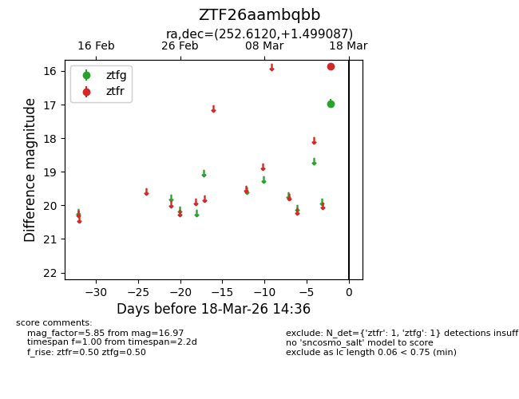
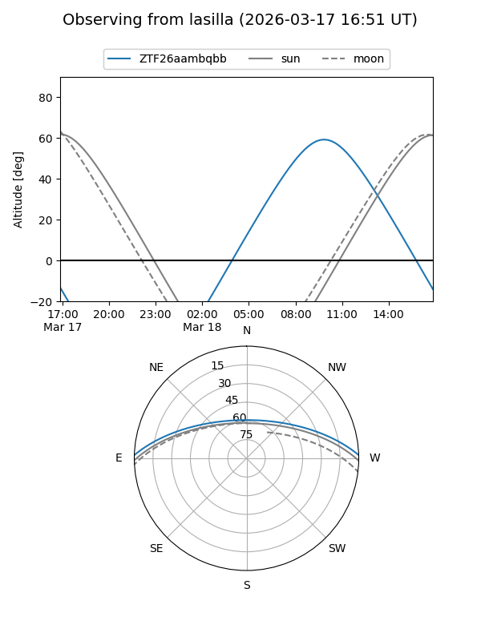
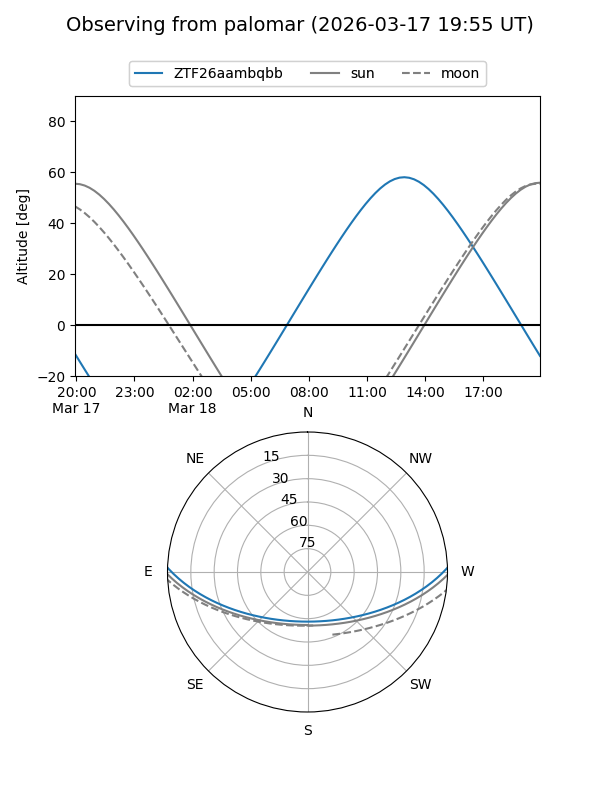

ZTF26aambqbb
Target ZTF26aambqbb at 2026-03-18 14:38
Aliases and brokers:
FINK: link
Lasair: link
ALeRCE: link
alt names
ZTF26aambqbb (ztf,fink_ztf)
Coordinates:
equatorial (ra, dec) = 252.6120,+1.49909
equatorial (HMS+DMS) = 16:50:26.88,+01:29:56.71
galactic (l, b) = (19.4940,+27.39321)
Flags:
Photometry:
last ztfg=16.97, ztfr=15.87
1 ztfg, 1 ztfr detections
Lightcurve

Visibility


Additional plots